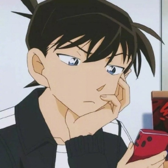

My name is Hong Cai,My major is Computer Science and Technology.
The reason why I choose to learn computer.
May be I like surf the Internet,or I am interested in programming.
Actually,I don’t know exactly.
But I believe I will fall in love with computers in the future.
I have a lot of hobbies.Like listening to music, drawing,watching football games etc.
